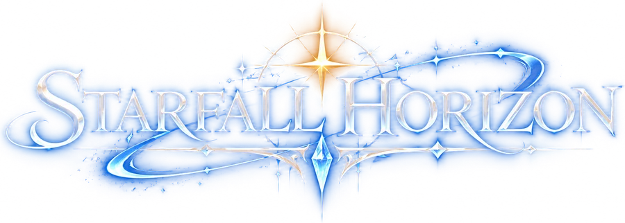
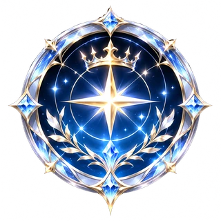
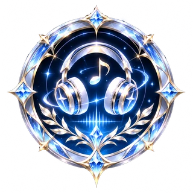

MY SOUND RHYTHM GAME

公式曲で遊ぶ

MY SOUND
⚙ OPTION
← 作品ページへ
← 戻る
MY SOUND
📂 mp3をえらぶ
自分のmp3（SunoやDAWで作った曲など）で遊べます。
曲はこの端末の中だけで使われ、サイトには送信されません。権利のある曲だけ使ってください。
おすすめ曲
この端末におぼえている曲
曲を解析中…
← 戻る
OFFICIAL
はぜる のオリジナル曲です。曲をえらぶと、音を解析して譜面を作ります。
← 曲えらび
⚙ オプション
ジャケットをタップで画像を変更
DIFFICULTY
BEGINNER
EASY
NORMAL
HARD
EXPERT
調整
TEMPO
BPM
−1
−.1
＋.1
＋1
÷2
×2
👆 タップ
拍のずれ
0ms
ためし聴きで「ピッ」が曲の拍に合っているか確かめてね。倍や半分のテンポなら ÷2・×2。曲に合わせて「タップ」を5回以上押しても合わせられます。
▶ ためし聴き
ピッ
0:00 / 0:00
この端末におぼえておく（次回から選びなおし不要）
▶ PLAY
SCORE
00000000
C
B
A
S
SS
COMBO
0
PAUSE
▶ 続ける
↻ リトライ
曲えらびへ戻る
PERFECT
0
GREAT
0
GOOD
0
BAD
0
MISS
0
MAX COMBO
0
SCORE
NEW!
0
↻ RETRY
曲えらび ▶
⌂
OPTION
ノーツスピード
6.0
判定ラインの高さ
74%
高いほど、指でノーツが隠れにくくなります。
タイミング調整
0ms
ノーツが曲より遅く感じたら＋、早く感じたら−に動かしてください。
ヒット音（タッチ時の「カチッ」）
とじる